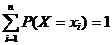
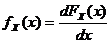
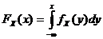
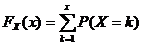
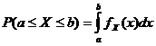
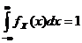
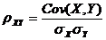

0 ≤ P(A) ≤ 1
P(AC) + P(A) = 1
P(A∪B) = P(A) + P(B) - P(A∩B)
Events A and B are disjoint iff
P(A∩B) = 0
P(A | B) = P(A∩B) / P(B)
P(A | B) = P(B | A) ⋅ P(A) / P(B)
Events A and B are independent iff
P(A∩B) = P(A) ⋅ P(B)
FX(x) = P(X ≤ x)







Bernoulli: 0-failure 1-success
Geometric: 0-failure 1-success
Hypergeometric: N objects with K success objects, n objects are taken.